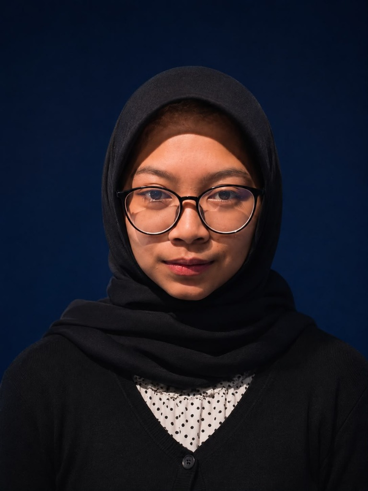

Mahasiswi Teknologi Informasi | Fasilkom UNEJ
Mahasiswi semester 3 yang tertarik untuk terus belajar eksplorasi bahasa pemrograman, pengolahan database, perancangan antarmuka pengguna (UI/UX), dan lain sebagainya.
Perkenalkan, nama lengkap saya Eka Lailatur Rosyidah dan teman-teman biasa memanggil saya Rosa. Saat ini saya adalah mahasiswi aktif semester 3 di Fakultas Ilmu Komputer (Fasilkom), Program Studi Teknologi Informasi, Universitas Jember (UNEJ).
Asal asli saya dari Mojokerto, Jawa Timur, dan saat ini sedang merantau di Jember untuk menuntut ilmu di bangku perkuliahan. Di kampus, saya banyak mempelajari logika pemrograman, struktur basis data, serta perancangan aplikasi baik di sisi desktop, console, web, dan lain sebagainya.
Website ini saya buat sebagai tugas mata kuliah Pemrograman Berbasis Web (PWEB) untuk mempraktikkan konsep dasar HTML, CSS yang responsif, serta manipulasi DOM menggunakan JavaScript.
Beberapa bahasa pemrograman, database, dan software yang pernah serta sedang saya pelajari:
Dua projek akhir yang telah saya kerjakan bersama kelompok selama masa perkuliahan:
Projek akhir menggunakan bahasa pemrograman Python berbasis Terminal / Console yang diintegrasikan secara langsung dengan database PostgreSQL.
Pada tugas kelompok ini, kami mengangkat studi kasus sistem pendataan produksi panen dan manajemen stok edamame pada PT. Mitratani Dua Tujuh di Jember, mulai dari pencatatan bobot masuk, klasifikasi mutu, hingga pemantauan stok di gudang pendingin (cold storage).
Projek akhir mata kuliah OOP menggunakan C# berbasis aplikasi desktop yang diintegrasikan dengan database PostgreSQL tingkat lanjut (pengembangan lanjutan dari materi semester sebelumnya).
Kami mengambil studi kasus pada CFMART, yaitu sistem aplikasi kasir dan pencatatan operasional yang bergerak di sebuah resto penjual olahan ikan lele, mencakup pengolahan data menu makanan, transaksi kasir otomatis, hingga pembuatan laporan riwayat penjualan.
Punya masukan, atau saran? Silakan tuliskan di bawah ini ya (bisa dikirim secara anonim):
Belum ada masukan yang dikirim di sesi browser ini.